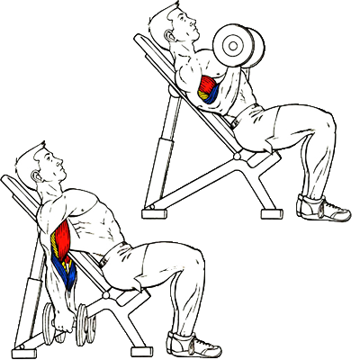

Сгибание рук на наклонной скамье уникально тем, что в стартовой позиции растягивается не только нижняя,
но и верхняя оконечность бицепса.
Исходное положение:
Сесть на наклонную скамью и взять в руки гантели.
Ноги плотно прижать к полу, а спину – к спинке скамьи.
Техника выполнения:
Поочередно сгибать руки в локтевых суставах, поднимая гантели.
Рекомендации:
В верхнем положении нужно максимально разворачивать кисти к себе. Локти нельзя подавать вперед.